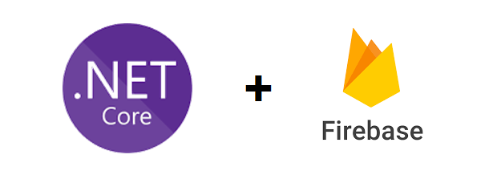
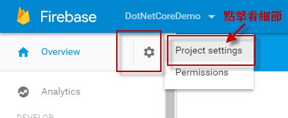
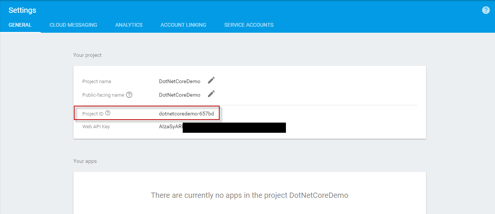
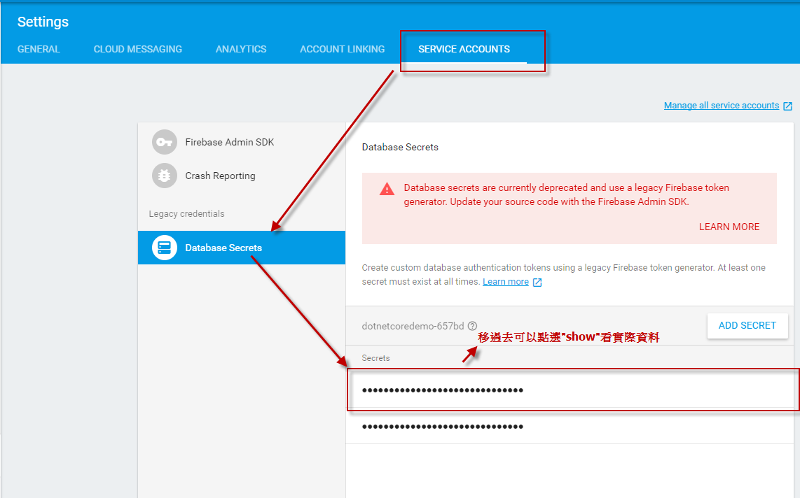
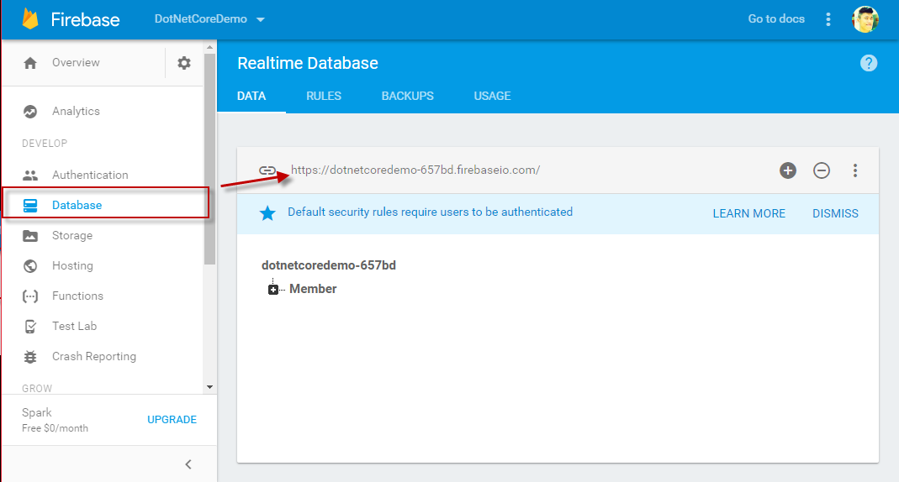
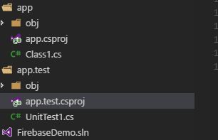
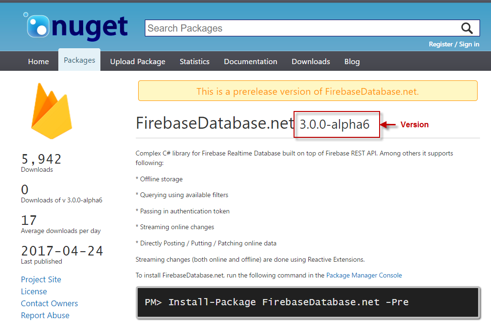
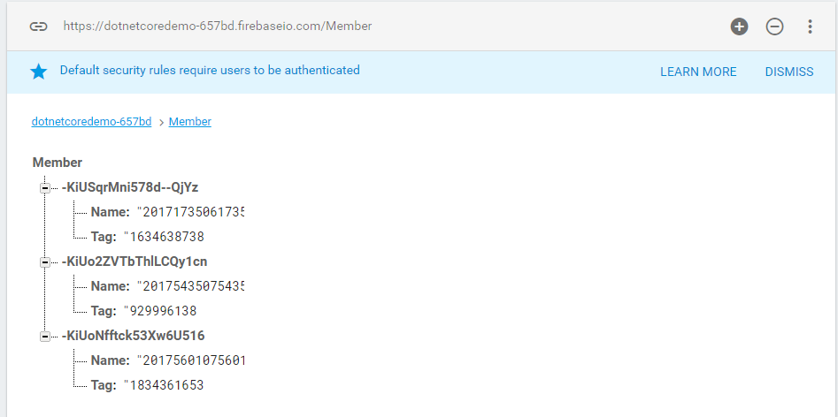
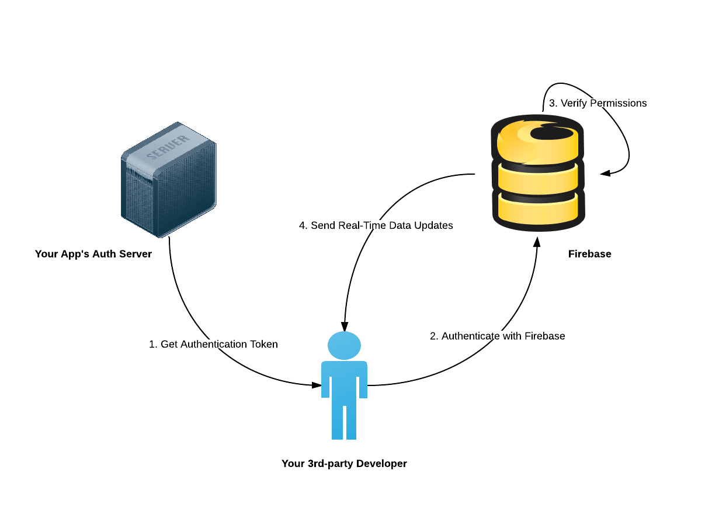

介紹GCP上的Firebase服務，並介紹實作如何與ASP.NET Core整合
Firebase原本是2011年開始提供雲端服務的一間公司，主要是考慮到建立網頁或手持裝置的軟體需要後端的搭配才能正式推出，為了降低後端的依賴並提供幾乎相同的基本功能而誕生的一個產品。
隨著行動化開發的風潮在2014年被Google收購，在2016年5月的Google IO大會上推出收購新版網頁管理介面與新的SDK類別庫，並推出多項新的功能，如分析、雲端訊息、檔案儲存、測試平台等創新功能，讓我們開發Mobile APP更加方便。
今天在介紹Firebase的同時，也會透過FirebaseDatabase.net實作與ASP.NET Core的整合來感受一下Firebase的Realtime Database功能

Firebase Introduction
Firebase 是一個同時支援 Android、iOS 及網頁的 app 雲端開發平台，協助 app 開發者在雲端快速建置後端服務，提供即時資料庫，有效縮短應用程式的開發時間，並幫助開發者更專注在本身應用程式(前端網頁與行動應用程式或是任何獨立且面相使用者的應用程式)的優化．

Google目前免費開放使用Firebase的服務，不論是網頁、應用系統或目前最熱門的手機，都能透過Firebase所提供的API儲存或讀取在雲端上的資料，開發人員不需要自己建置資料庫與設計伺服器端的程式，就能快速地讓自己的應用程式能夠將資料儲存在雲端上。

想知道透過Firebase能實際做到什麼功能可以參考官方的Case Studies
Firebase目前提供的功能，依據不同層面可以分為以下功能：
Analysis
- Analytics
提供行動數據分析。
而這邊很有趣的一點，如果你的app有使用Google Analytics(GA)的朋友，Google 官方則是建議改用Firebase來取代Google Analytics，兩者的比較可以參考下表整理:
| Firebase Analytics | Google Analytics 360 |
|---|---|
| Event-based data collection model, designed specifically for apps | Screenview/pageview data collection model |
| Free, unlimited event reporting | Analytics 360 hit volume limits and pricing apply to all data that is sent to Analytics 360 from websites or apps. |
| Integrated feature of Firebase, Google’s mobile developer platform | Standalone analytics product, part of Google Analytics 360 Suite |
| Automatic measurement of “first open”, in-app purchase, and other key events | Developer must explicitly initialize screenview tracking and manually instrument events in the app |
| No roll-up of multiple apps | Roll-up properties (including roll-up of both web and mobile app properties) |
| Not covered under Analytics 360 SLAs | Covered under Analytics 360 SLAs |
如果有興趣感受一下差異的可以看看這個：
至於選擇上的推薦，小弟是覺得還是要秉持基金投資有賺有賠，申辦前請先詳讀公開說明書的方式建議大家再次看看Firebase的收費方式與SDK細節才做決定。
但如果沒有價格或細節的考量，當然是趕快換去Firebase Analytics!
Develop
除了行動分析，Firebase這邊也提供了web, mobile app或任一面向使用者的應用程式可能所需的基礎功能:
Cloud Messaging
在網頁上即可送出雲端通知或訊息至裝置中(Push notification)，可用在測試或是對所有上線的裝置送出通知或訊息。
Authentication
提供身分驗證的功能
Realtime Database
一個雲端 NoSQL 資料庫，使用 JSON 格式來儲存，當各裝置連上資料庫時可進行同步也可支援APP離線使用，等到連上線時才做更新(Offline)。
Cloud Storage
儲存實體資料，可以把實體資料(圖檔，設定檔，文字檔或影音檔等等)存放置雲端
Cloud Functions
可以動態的執行一段你的後段程式碼，這服務其實就是Serverless的實作，你不用管理或是考量何時需要擴充硬體，只需要將程式碼放上即可使用。有興趣的朋友可以參考這個影片介紹
Hosting Web
一個CDN服務，可以將我們的靜態網頁放置全球各地的Edge Location，提升我們連結至該網頁時的速度。
Test Lab
可以透過雲端服務連結實體裝置來測試你的應用程式，Test Lab已經在主機端接好一大堆一大堆一大堆實體Android 應用程式，並透過雲端服務的方式讓你將應用程式可以以服務的方式在上面進行測試，並同時取得你的測試結果與執行的log紀錄等。此服務如同AWS Device Farm的功能，但Test Lab目前尚未提供iOS裝置是比較尷尬的。
Grow
Notifications
不同於Cloud Messaging有提供client與server APIs來呼叫使用。Notification就是一個工具來幫我們排程的發送推播訊息並作相對的管理。這邊從Stack Overflow上面找到一篇不錯的解釋:
- Firebase Cloud Messaging is the library that you need to use in your application to receive cloud messages. It includes client APIs (multi-platform) to receive messages, and server APIs (HTTP and XMPP) to send messages.
- Firebase Notifications is the tool integrated in the Firebase Console to schedule cloud messages. This also includes the integration with Firebase Analytics to target analytics-based audiences and track opening and conversion events.
Remote Config
可以讓我們用config來控制app的呈現與flow，達到更新config但不用重新下載的功能。
App Indexing
幫助你將APP整合Google Search，協助你的App在Google Search上面可以正確地被查詢到且直接下載。透過這樣的方式可以提升你的Google Search Indexing(SEO強化)
Dynamic Links
提供你產生一個單一網址(deep link)，你可以將你的原本的URL透過該單一網址做操作。Dynamic Links 可根據其打開的平台而呈現不同的内容。此外，Dynamic Links還可以跨應用程式的安装工作。例如:用户打開一個Dynamic Link但没有安装指定的App，系统則會提示該用户安装指定的應用，並在應用完成安裝之后自動啟動原先訪問該連結該呈現之內容。
Invites
一個referrals code服務提供給email或是簡訊(SMS)分享使用。而這個服務也能跟Dynamic Links整合，例如:開啟一個特定的連結，他會偵測你有沒有下載該App並在你第一次登入的時候寄送一個通知給你告訴你可以透過email或是SMS分享一個referrals code給你朋友來獲得更多回饋點數。
AdWords
連結 Firebase 與 AdWords 就能使用各項工具掌握 AdWords 預算帶來應用程式安裝和應用程式內動作的成效。
Earn
AdMob
Google的AdMob 是一個行動廣告聯播服務。如果你想要透過 App 盈利，通常有兩種方式，一種就是將你的 App 設定為付費模式，使用者要下載你的 App 要先付費（例如定價為 30 元或 120 元），而另外一種方式就是免費使用但會有廣告然後放置聯播網廣告賺錢。
如果對Firebase這邊對於產品營運與大資料分析有什麼幫助可以參考Steven Hsieh的Intro to Firebase Analytics與Firebase & BigQuery 實戰分享
SDK Support
而目前官方支援的SDK分為五種:
- iOS
- Android
- Web(RESTful格式)
- C++
- Unity
前面提到的功能也針對不同的SDK有不同的支援，有些服務是不適用全部SDK的。
官方這邊很貼心的幫大家整理了可以使用的framework來讓各領域的專家透入開發，細節可以參考
很不幸的是Google還是照舊遺漏了ASP.NET的同胞們(QQ，勿忘我)，所以接下來我們就來介紹實戰Firebase如何與ASP.NET Core使用Web整合的方式來嘗鮮。
Integration with ASP.NET Core
這邊示範如何讓ASP.NET Core取得Firebase Realtime Database的資料
Firebase Project Setup
首先你需要申請一個帳號，這邊帳號我是用GCP的流程申請，請至官網申請。
Create Project
前往Firebase Console下，並選取指定專案或是透過專案連結進入https://console.firebase.google.com/project/{project-id}}


這邊的專案是GCP專案，所以你可以成立一個獨立的專案或是沿用既有的
Project Setting and Database Secrets
當我們建立新專案以後就可以看到有一個Overview的Project Settings來看專案的相關設定

Project ID與Database Secrets


當我們有這些資料後我們就可以使用framework+ASP.NET Core來對資料做存取
Create Database and Data
我們可以到Database那邊看一下連結位置與目前資料狀態

ASP.NET Core Integration
這邊介紹使用FirebaseDatabase.net這個framework來幫我們ASP.NET Core與ASP.NET透過RESTful的方式操作Firebase上的Realtime Database資源。基本上他已經將Web這層的SDK多做了一層的包裹(wrap)，讓.NET開發的朋友們更好上手。目前有提供ASP.NET Core與ASP.NET的支援。
Create Solution and Projects
這邊我們一樣建立兩個專案並透過一個.sln檔案把兩個專案連結起來
mkdir FirebaseDemo ; cd FirebaseDemo
mkdir app ; mkdir app.test
dotnet new classlib -f netcoreapp1.1 -o .\app ; dotnet new xunit -o .\app.test
dotnet new sln ; dotnet sln add
dotnet sln add .\app\app.csproj;dotnet sln add .\app.test\app.test.csprojAdd FirebaseDatabase.net Reference
再將兩個專案分別加入FirebaseDatabase.net的參考，並執行還原(將第三方套件載入)
dotnet add .\app\app.csproj package FirebaseDatabase.net -v 3.0.0-alpha6
dotnet add .\app.test\app.test.csproj package FirebaseDatabase.net -v 3.0.0-alpha6
dotnet restore並針對測試專案加入app專案參考
cd app.test ; dotnet add reference ..\app\app.csproj當我們執行到這邊基本上專案已經成形如下:

這邊要提醒一下FirebaseDatabase.net的參考要指定版本(因為正式版比較舊不提供當前ASP.NET Core的版本)

Update Files Content and Add more Files
然後我們再將app\class.cs更名MemberRepository.cs，並加入下面程式碼到檔案中
using System;
using System.Collections.Generic;
using System.Threading.Tasks;
using Firebase.Database;
using app.Model;
using Newtonsoft.Json;
namespace app
{
public class MemberRepository
{
private static readonly Lazy<MemberRepository> lazy = new Lazy<MemberRepository>(() => new MemberRepository());
public static MemberRepository Instance { get { return lazy.Value; } }
private FirebaseClient Firebase { get; }
private MemberRepository()
{
var auth = "<auth>";
var baseUrl = "<url>";
var option = new FirebaseOptions()
{
AuthTokenAsyncFactory = () => Task.FromResult(auth)
};
this.Firebase = new FirebaseClient(baseUrl, option);
}
public async Task GetDataAsync(string key)
{
var data = await this.Firebase
.Child(key)
.OnceAsync<string>();
foreach (var item in data){
Console.WriteLine(string.Format("Get Async Data from key({0}) = {1}:{2}",
key,
item.Key,
item.Object));
}
}
public async Task SetDataAsync(string key, KeyValuePair<string, string> data)
{
var result = await this.Firebase
.Child(key)
.PostAsync(JsonConvert.SerializeObject(new Member(){
Name = data.Key,
Tag = data.Value
}));
Console.WriteLine(string.Format("Post Async Data to key({0}) = {1}", result.Key, result.Object));
}
}
}接著新增目錄Model，並在該目錄下新增Member.cs並添加以下內容:
using Newtonsoft.Json;
namespace app.Model
{
public class Member
{
[JsonProperty("Name")]
public string Name {get;set;}
[JsonProperty("Tag")]
public string Tag {get;set;}
}
}到這邊我們程式的部分完成，接著到app.test目錄底下的UnitTest1.cs內容作以下修改:
using System;
using System.Collections.Generic;
using Xunit;
using app;
namespace app.test
{
public class UnitTest1
{
[Fact]
public async void Test_MemberRepository_Basic_GetDataAsync()
{
var key = "-KiUSqrMni578d--QjYz";
await MemberRepository.Instance.GetDataAsync(key);
}
[Fact]
public async void Test_MemberRepository_SetDataAsync()
{
var key = DateTime.Now.ToString("yyymmsshhmmss");
var value = new Random(DateTime.Now.Millisecond).Next().ToString();
var memberData = new KeyValuePair<string,string>(key, value);
await MemberRepository.Instance.SetDataAsync("Member",memberData);
}
}
}Run Test
接著我們在測試專案底下執行:
dotnet test可看到這樣的結果:

這邊GetDataAsync的帶入值比較奇怪是因為這是Firebase自動產生的:

到這邊我們就完成了ASP.NET Core與Firebase的溝通!
Security Rules
Firebase預設只有已經驗證過的帳號才能夠讀取(read)或寫入(write)記錄到指定資料庫，因此，在目前的設定下是無法讓後續開發的應用程式讀取聯絡資料的，為了測試，筆者暫時將讀寫開放為任何對象都可存取，但請在設計產品APP時訂定符合安全原則的規則，請將read與write的值都更改為「true」後，按下「發佈」，即可套用新的規則。
這邊針對專案的相關設定檢查可以參考Firebase Dynamic Links
Conclusion
總結一下，Firebase 提供了Mobile App 完整的基本需求，透過一個很棒的即時資料處理與其他相關功能，加速與協助縮短整個行動應用開發的週期
這邊解釋一下為什麼Firebase還是需要跟ASP.NET Core做整合透過這樣的中介層，而不是如官方所說得直接給我們Mobile App或是Web App等應用程式端直接呼叫。
以我們真實的開發上常常會遇到有權限/授權/登入等功能的需求為例:
我們以往大多都要額外開發後端的API程式與前端(web, mobile app or any others)的應用程式做token交換，後端程式還需要這樣的token儲存起來並做對應的時間內失效處理。整個開發繁瑣與同性質不同產品的功能又大同小異，這邊我們就可以透過Firebase來幫我們加速開發:
- 透過自行開發的後端應用程式產生token的機制
- 前端應用程式傳入識別帳號從後端應用程式取得必要權限的token
- 前端應用程式找Firebase確認可授予的權限
- 提供權限對應的功能

以上架構簡單轉換成流程如下:
- 首先你會取得 User 的登入資訊(帳號名稱/密碼)並交給你的伺服器產生Authentication Token
- 將資訊傳給 Firebase Authentication SDK 來驗證
- 驗證成功你就可以取得 User 所提供的資訊，預設情況下
- User 驗證成功後可以讀寫 Firebase Realtime Database 和 Firebase Storage
所以上面就可以看到其實我們還是需要一個 service 或api提供驗證 Authentication Token。
而除此之外如果對Firebase的應用感興趣也可以上官方CodeLab來練習一下，而筆者也會再陸續更新Firebase與ASP.NET Core上面的實戰整合跟各位分享。